BN 編輯器操作手冊
17 個版位 × 20 個主題：匯入工單文案與素材包、調整人物照片位置，一次下載整包 BN 圖。畫面全部是實機截圖，跟你打開工具看到的一模一樣。
第一次打開怎麼做
沒有資料時（全新專案，或剛按過「全部清除」）會自動跳出匯入精靈：
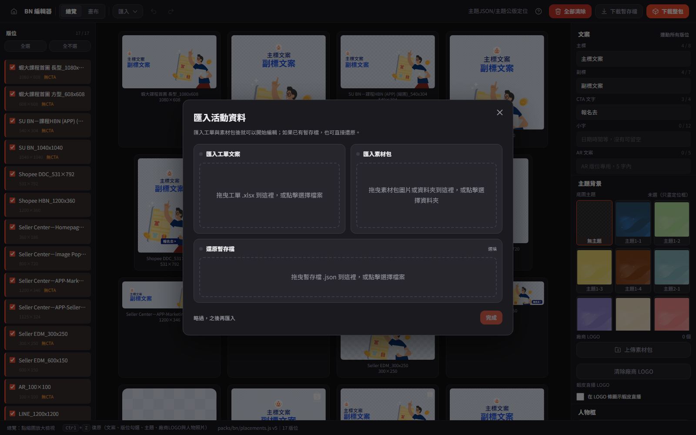
- 工單／素材包任一張沒做完都沒關係——左下角「略過，之後再匯入」、Esc、右上角 ✕、點背景都能先關掉，之後從頂列「匯入 ▾」補匯。
- 瀏覽器裡已經有暫存內容時（不是空白狀態），重新整理不會自動跳出這個精靈打斷你。
頂列工具
由左到右（沒有收進「⋯」之類的隱藏選單，只有「匯入」是下拉）：
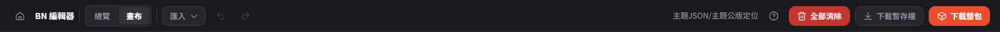
- 匯入 ▾：三項——匯入工單文案（.xlsx）、上傳素材包（整個資料夾）、匯入暫存檔（.json）。
- 復原／重做：Ctrl Z / Ctrl Shift Z，涵蓋文案、版位勾選、主題、廠商 LOGO、人物照片調整。
- 全部清除（紅字）：跳確認、可復原。
- 下載暫存檔：只存設定，不渲染圖。下載整包（橘底）：勾選版位 PNG＋json。
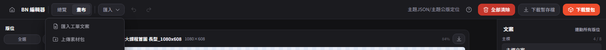
「上傳素材包」用瀏覽器原生選資料夾，點下去會再跳一次「要上傳這個資料夾裡的 N 個檔案嗎」——這是瀏覽器的提醒，不是出錯。
總覽與畫布
左欄「版位」清單兩種模式都在：勾選才會出現在畫面上，也才會被「下載整包」收進去。
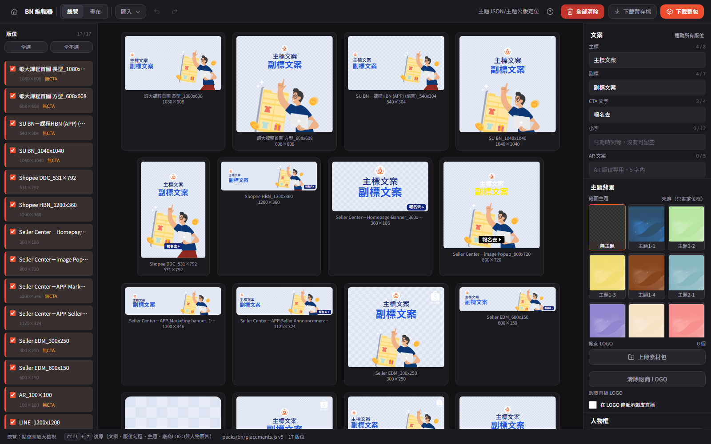
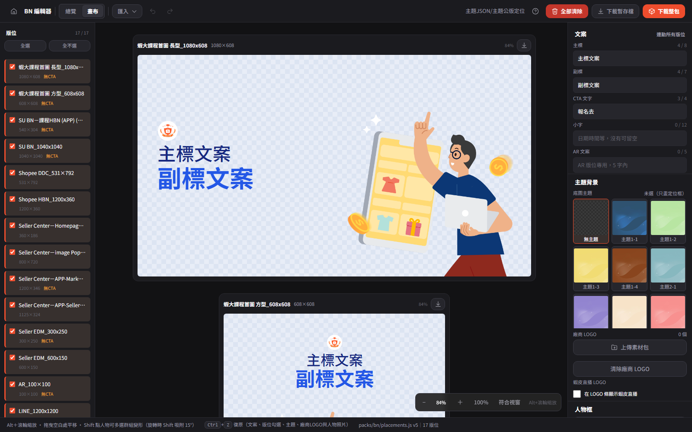
版位名稱旁邊標尺寸；文案或 CTA 還沒填齊的版位，清單上會用橘字提醒「無文字定位」「無CTA」。每塊版位卡片角落的下載鈕不受勾選狀態限制，不用先按「下載整包」就能單獨存一張。
文案與主題配色
右欄「文案」區的主標、副標、CTA 文字、小字、AR 文案，改一個字就同步套到全部 17 個版位（共用同一份公版定位，只是每個版位的框大小不同）。字數提示是軟性的，超過仍可輸入，只是提醒版面可能被撐開。
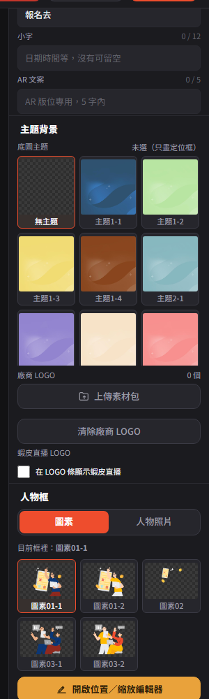
工單「主題」欄位有填值時，匯入會自動比對套用；對不到名稱只會跳警告，不會讓整次匯入失敗，照提示手動選一次即可。
LOGO
固定橫排主題的 LOGO 條順序：蝦大 ＋ 蝦皮直播（可關）│廠商1／2／3（素材包帶入）。有的主題改成圍繞人物照片的圓圈徽章；橫式版位齊左、直式／方形版位置中。蝦皮／直播 LOGO 的橘、白兩版由主題自動挑，不用手動調。
右欄「主題背景」區（見上圖）可以：上傳素材包帶入廠商 LOGO（或「清除廠商 LOGO」整批移除）、勾選「在 LOGO 條顯示蝦皮直播」（工單填 Y／是會自動打開）。
蝦皮直播 LOGO 目前是上下兩段直式鎖定圖，文字只佔總高約 37%，暫時無法跟廠商 LOGO 一樣大。窄版位（如 300×250）塞滿 3 顆廠商 LOGO 時，每顆大約只有 27px 寬，是版面限制，不是上傳錯誤。
人物框與圖素
右欄「人物框」區用「圖素」「人物照片」兩個分頁切換，各自記住自己最後一次的內容：
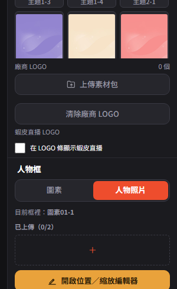
- 圖素——新專案預設就帶一張，點縮圖換一張套用到所有版位；去背 PNG，用「圖素定位框」貼合插畫實際看得到的範圍。
- 人物照片——自己上傳的照片，整張 contain 進同一個框。
上傳、替換照片、或切換圖素，都會把該人物的位置／縮放／角度重設為預設值（自己上傳的照片預設貼齊框底）。
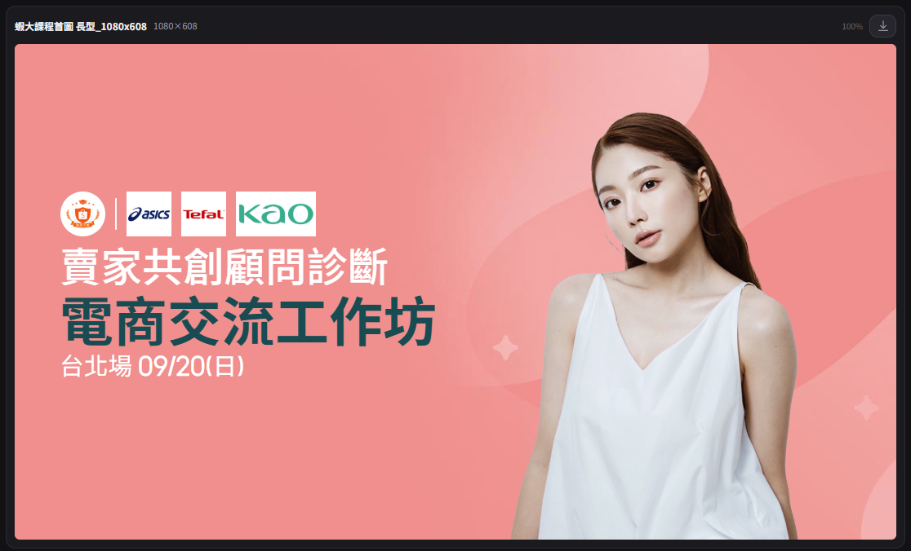
雙人上傳
上傳第一張後卡片列下方會出現「＋」；再上傳第二張就自動變成人物 2，人物框自動左右拆開：
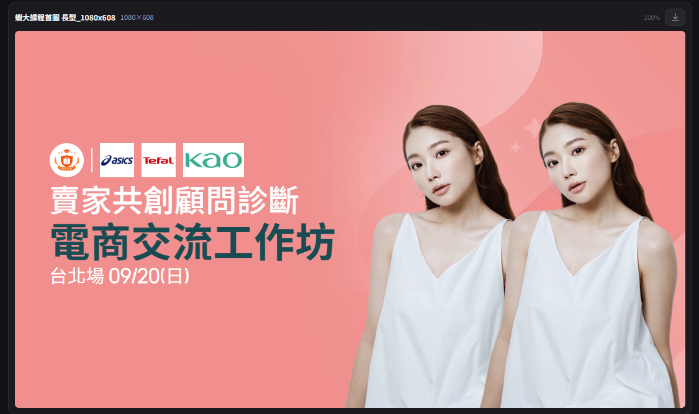
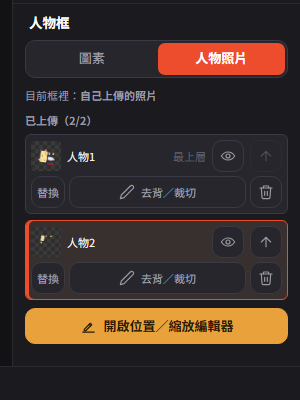
只有「兩邊都是自己上傳的照片」才會拆框；只要有一邊還是圖素，就維持單人完整框——圖素插畫本身已經是完整構圖，拆了會破壞畫面。
只剩一張時移除＝清空該槽；兩張時移除人物1，人物2 自動遞補成人物1。
位置調整
按右欄「開啟位置／縮放編輯器」，彈出的面板左邊是圖層列表、右邊是可操作的預覽：
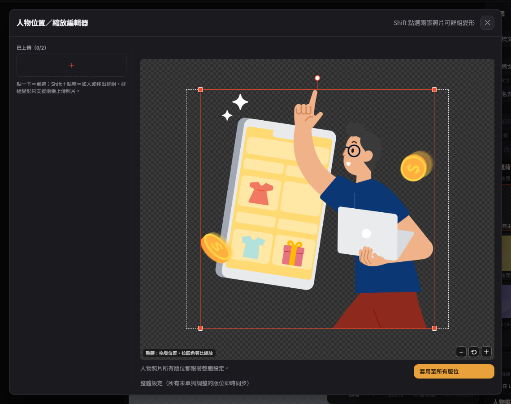
位置調整分兩層，操作手感完全一樣：
- 整體——這個編輯器彈窗裡調，套用到所有還沒被單獨調整過的版位。
- 單一版位——切到畫布模式直接點該版位的人物照片調，只影響這一塊，調過之後不再跟著整體變動；選取框下方「⟲ 還原」可以讓它重新跟回整體。
兩層都支援 Shift 多選兩張做群組變形（僅限兩邊都是自己上傳的照片）：拖曳一起平移、縮放固定群組中心同步等比、旋轉各自自轉並繞群組中心公轉。縮放範圍 20%～500%，不受定位框限制（放大超框、拖出框外都允許，只受版位邊界裁切）。
按「套用至所有版位」會跳出三選一確認：「覆蓋手動調整的版位」／「僅覆蓋未手動調整版位」／「取消」。
下載與暫存
勾選版位各一張 PNG ＋ project.json 打包 zip。正式交件用。
只存 .json 設定快照，不渲染圖片。待會／明天繼續編輯用，沒勾選版位也能存。
每塊版位卡片角落的下載鈕，不受勾選限制。臨時補一張圖最快。
「匯入暫存檔」一律先跳確認再覆蓋目前畫面；頂列直接匯入工單／素材包，只有「目前畫面已有內容」才會先問一次，全新畫面不會多問。編輯過程會自動暫存在這台電腦（約 300 毫秒寫入一次），但換電腦或清瀏覽器資料就會不見，重要進度建議還是按一次「下載暫存檔」。
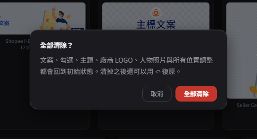
人物照片太大、瀏覽器暫存放不下時會跳一次性提示：畫面與下載整包都不受影響，只是重新整理後要再上傳一次。
已知限制
- 上傳素材包會跳瀏覽器原生「要上傳這個資料夾」確認框，正常現象。
- 位置調整編輯器固定抓一塊代表版位算整體設定，沒有「選版位」下拉；要看特定版位請切到畫布模式調那一塊。
- 復原／重做涵蓋文案、版位勾選、主題、LOGO、人物照片；但「看的狀態」（總覽/畫布、縮放平移、選到哪一塊）不會進復原堆疊。
- 窄版位塞滿 3 顆廠商 LOGO、蝦皮直播 LOGO 想跟廠商 LOGO 一樣大——受限於既有素材／版面，暫無解法。